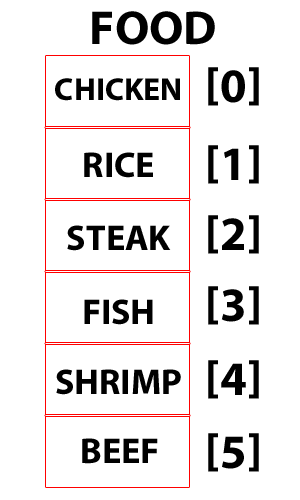

Ruby: Arrays vs. Hashes
DBC Phase 0 - Week 4
Jan 24, 2016
Today we’re taking a look at arrays and hashes in the Ruby language. What are the differences and similarities between them? What do they do? Why use one over the other? Hopefully I’ll be able to answer those questions in a straightforward way.
First, it’s important to know that both arrays and hashes are collections of objects that are arranged into key-object pairs. This means that objects are arranged into a list, and each individual object is linked to a key, which can be called later to view its associated object. In arrays, these keys are simply integer numbers. The array is laid out much like a matrix (from high school math class), with each object placed inside a cell and arranged in a line. Arrays can also be nested, allowing for multidimensional arrays (seen below).

Hashes are almost identical to arrays, save for one major difference: instead of a simple integer pointing at the location of an object, hashes can use ANY object as a key. This creates a rigid key-value pair that can be called, viewed, or edited on the fly later. An example of a hash code snippet can be seen below.
hash = {
key1 => value1,
key2 => value2,
key3 => value3
}
In short, the main difference between arrays and hashes lies in what you wish to accomplish. It is simpler and more efficient to iterate over an array, but a hash has more overall flexibility. While one could probably get away with just using arrays, the hash give you a more powerful means to store and display data. For example, if you want to store the height, weight, age, hair color, and eye color for someone, a hash make more sense, since these values can be tied to keys labeled “height” or “age”. In the end, which one you use depends on what you want to do with your data points. Get some practice using both, and brag to your friends that you have a powerful new tool under your belt.